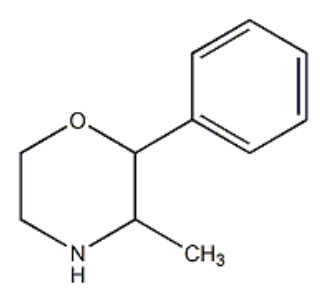
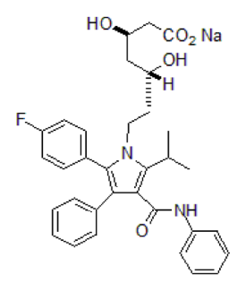
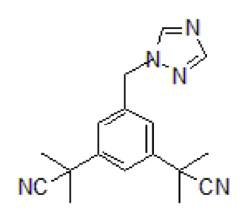

108 年第 2 次藥師藥理學與藥物化學試題與答案
這一頁是民國 108 年第 2 次藥師藥理學與藥物化學的整份歷屆試題，共 80 題，題目與標準答案出自考選部「國家考試試題及測驗式試題答案」開放資料。以下逐題列出題幹、選項與答案；要計時作答或記錄成績，請用線上練習。
考選部原始場次代碼：108100
線上作答這一科 →
全部 80 題
第 1 題
下列給藥方式中，何者的bioavailability為100%？
- （A）口服（oral）給藥
- （B）直腸（rectal）給藥
- （C）吸入（inhalation）給藥
- （D）鞘內（intrathecal）給藥
答案：（D）
第 2 題
在慢性腎衰竭的老年人，digoxin的腎清除率會明顯降低，但藥物半衰期卻改變不大，此情況的主要原因為何？
- （A）藥物的Vd值變大所致
- （B）病人的骨骼肌重量減少所致
- （C）藥物在腎臟的結合量增加
- （D）藥物與血中蛋白的結合量增加
答案：（B）
第 3 題
下列何者與受體結合後的ligand-receptor complex，不是直接作用在特定基因的DNA序列？
- （A）vitamin D
- （B）insulin
- （C）corticosteroids
- （D）thyroid hormone
答案：（B）
第 4 題
有關抗病毒藥物之敘述，下列何者錯誤？
- （A）抗病毒藥物對人體的毒性有部分是來自同時抑制了宿主細胞DNA合成
- （B）抗病毒藥物一般可作用在病毒的複製及潛伏期而達到效用
- （C）抗流感的神經氨酸酶抑制劑（neuraminidase inhibitor）主要是抑制病毒從宿主細胞中釋放
- （D）抗疱疹病毒的藥可預先投與進行器官移植的病人，當做單純疱疹病毒（HSV）或水痘帶狀疱疹病毒 （VZV）感染風險的預防
答案：（B）
第 5 題
排尿疼痛、發燒、尿液白血球脂酵素呈陽性，但無噁心嘔吐之病患就診，又過去一年曾經三次因尿道感染而使 用trimethoprim-sulfamethoxazole得到及時改善，目前因骨質疏鬆而服用鈣片，依據此經驗如何使用抗生素治療 較適當？
- （A）以trimethoprim-sulfamethoxazole治療
- （B）使用fluoroquinolone類藥物，無需考量抗藥性的可能性
- （C）使用ciprofloxacin但與鈣片服用時間必須錯開二小時以上
- （D）使用sulfacetamide比較適當
答案：（C）
第 6 題
下列何種化療組合較不適當？
- （A）mechlorethamine, vincristine, procarbazine, prednisone
- （B）procarbazine, lomustine, vincristine
- （C）5-fluorouracil, leucovorin, oxaliplatin
- （D）vincristine, doxorubicin, eribulin
答案：（D）
第 7 題
下列何種抗癌藥，可用來治療視網膜黃斑部病變（wet form of advanced age-related macular degeneration）？
- （A）bevacizumab
- （B）cetuximab
- （C）rituximab
- （D）trastuzumab
答案：（A）
第 8 題
關於erlotinib敘述，下列何者正確？
- （A）適用於EGFR T790M變異之肺癌
- （B）主要作用機轉為同時抑制EGFR, HER2及HER4
- （C）可用於對crizotinib產生抗藥性之治療
- （D）與cetuximab相同都能抑制EGFR來達到治療效果
答案：（D）
第 9 題
下列lactam-antibiotics中，何者對酸不穩定，因此不可口服？
- （A）oxacillin
- （B）ampicillin
- （C）amoxicillin
- （D）methicillin
答案：（D）
第 10 題
下列抑制血液凝固藥物，何者不是藉由與antithrombin III結合，進而造成factor Xa去活化（inactivation）？
- （A）fondaparinux
- （B）dalteparin
- （C）tinzaparin
- （D）warfarin
答案：（D）
第 11 題
造血生長因子interleukin（IL）-11及藥物romiplostim為調節何種血球生成為主？
- （A）紅血球RBC
- （B）網狀球reticulocyte
- （C）血小板platelet
- （D）單核球monocyte
答案：（C）
第 12 題
下列有關降血脂藥物之敘述，何者錯誤？
- （A）niacin除了降低VLDL的分泌，也會影響膽酸（bile acid）產量
- （B）fenofibrate會降低VLDL含量，用於高三酸甘油酯血症（hypertriglyceridemia）
- （C）ezetimibe會降低體內LDL，用於植物固醇血症（phytosterolemia）病人
- （D）atorvastatin會增加肝臟細胞中LDL受體
答案：（A）
第 13 題
下列關於desmopressin之敘述，何者錯誤？
- （A）具有升血壓作用
- （B）作用於vasopressin type 1（V1）受體可以促進腎臟集尿管再吸收水分子
- （C）可以治療垂體性尿崩症（pituitary diabetes insipidus）
- （D）可以治療von Willebrand disease
答案：（B）
第 14 題
長時間使用glucocorticoids製劑可能導致下列那些副作用？①胃潰瘍 ②肌肉病變 ③骨質疏鬆 ④血鈉過 低 ⑤血糖過低
- （A）①②③
- （B）①③⑤
- （C）②③④
- （D）②④⑤
答案：（A）
第 15 題
下列關於停經後荷爾蒙治療（postmenopausal hormonal therapy）之敘述，何者錯誤？
- （A）主要是回補黃體素製劑（progestins）而改善停經後所引起之症狀
- （B）不會明顯影響血漿中三酸甘油酯濃度
- （C）可預防停經後骨密度降低
- （D）可能增加發生子宮內膜癌（endometrial carcinoma）的風險
答案：（A）
第 16 題
下列藥物何者較適合用於治療前列腺癌（prostatic carcinoma）？
- （A）oxandrolone
- （B）flutamide
- （C）fulvestrant
- （D）exemestane
答案：（B）
第 17 題
使用利尿劑hydrochlorothiazide時可能導致之副作用，下列何者錯誤？
- （A）代謝性鹼中毒（metabolic alkalosis）
- （B）低血鈉症（hyponatremia）
- （C）低血脂症（hypolipidemia）
- （D）痛風（gout）
答案：（C）
第 18 題
Alteplase用於治療栓塞症包括嚴重深層靜脈栓塞、急性心肌梗塞等，其藥理機制為何？
- （A）plasminogen activator
- （B）thrombin inhibitor
- （C）factor Xa inhibitor
- （D）glycoprotein IIb/IIIa inhibitor
答案：（A）
第 19 題
Procainamide為會產生延長心臟動作電位期間之第一類抗心律不整藥物，其延長動作電位期間的作用機制為 何？
- （A）代謝物N-acetoxylprocainamide能抑制鉀離子管道
- （B）procainamide能抑制鉀離子管道
- （C）代謝物N-acetylprocainamide能抑制鉀離子管道
- （D）procainamide能減慢鉀離子管道活化
答案：（C）
第 20 題
併用下列何種藥物，能減少因使用大劑量organic nitrates治療穩定型心絞痛時反而產生刺激心臟惡化心絞痛的 發生？
- （A）calcium channel blocker
- （B）muscarinic blocker
- （C）alpha blocker
- （D）beta blocker
答案：（D）
第 21 題
下列那一種降壓藥在高血壓又有心絞痛病人使用時，會增加交感神經刺激，增加引發心肌梗塞的危險？
- （A）carvedilol
- （B）losartan
- （C）labetalol
- （D）hydralazine
答案：（D）
第 22 題
Dabigatran etexilate mesylate能降低中風風險、以及治療非瓣膜性心房顫動（nonvalvular atrial fibrillation）可能 產生的系統性栓塞症（systemic embolism），其藥物作用特性何者正確？
- （A）只能皮下或靜脈注射的thrombin inhibitor，不可口服
- （B）dabigatran及其代謝物均為direct thrombin inhibitors
- （C）非prodrug，代謝不受腎功能影響
- （D）可用於預防置換金屬瓣膜病患可能產生的血栓栓塞危險
答案：（B）
第 23 題
Lomitapide可經由抑制三酸甘油酯和膽固醇轉化為極低密度脂蛋白（VLDL），抑制乳糜微粒合成，達到降低 血漿中低密度膽固醇（LDL-C）的濃度，其藥理作用機制為何？
- （A）Apo B inhibitor
- （B）mitochondrial transition pore inhibitor
- （C）proprotein convertase subtilisin/kexin type 9 inhibitor
- （D）microsomal triglyceride transfer protein inhibitor
答案：（D）
第 24 題
下列何者並非副交感神經系統的特點？
- （A）活化副交感神經系統可抑制心跳
- （B）抑制副交感神經系統會導致口乾
- （C）副交感神經系統以乙醯膽鹼作為神經傳遞物質
- （D）副交感神經系統之節後神經纖維比交感神經系統之節後神經纖維長
答案：（D）
第 25 題
下列關於擬交感神經作用劑之敘述，何者錯誤？
- （A）dobutamine可以治療敗血性休克
- （B）midodrine可以治療姿態性低血壓
- （C）droxidopa可以治療姿態性低血壓
- （D）atomoxetine可以治療注意力缺陷過動障礙
答案：（A）
第 26 題
下列何種臨床症狀，不宜使用膽鹼受體阻斷劑治療？
- （A）神經毒氣中毒
- （B）有機磷農藥中毒
- （C）野生毒蘑菇中毒
- （D）一氧化碳氣體中毒
答案：（D）
第 27 題
下列何種藥物不屬於選擇性的α1-adrenergic antagonist？
- （A）prazosin
- （B）doxazosin
- （C）phentolamine
- （D）terazosin
答案：（C）
第 28 題
有關bismuth subsalicylate的敘述，下列何者錯誤？
- （A）口服後在胃中分解出bismuth及salicylate，而二者再被吸收
- （B）bismuth具有保護胃壁的作用
- （C）bismuth具有抗菌作用
- （D）salicylate可以抑制prostaglandin的分泌
答案：（A）
第 29 題
Domperidone不具有下列何種作用？
- （A）促進催乳素分泌
- （B）引起噁心嘔吐
- （C）促進胃排空
- （D）改善慢性消化不良
答案：（B）
第 30 題
下列有關使用aspirin的敘述，何者正確？
- （A）經由可逆性（reversible）反應抑制cyclooxygenase
- （B）主要由大腸吸收
- （C）為propionic acid之衍生物
- （D）具有抑制thromboxane及prostaglandin生成之效用
答案：（D）
第 31 題
下列類風濕關節炎（rheumatoid arthritis）治療藥物，何者作用與TNF無關？
- （A）golimumab
- （B）infliximab
- （C）adalimumab
- （D）omalizumab
答案：（D）
第 32 題
下列類固醇藥物，何者抗發炎效果最差？
- （A）prednisolone
- （B）hydrocortisone
- （C）betamethasone
- （D）dexamethasone
答案：（B）
第 33 題
下列抗憂鬱藥物何者不具有抑制血清素轉運體（serotonin transporter）效果？
- （A）clomipramine
- （B）fluoxetine
- （C）sertraline
- （D）phenelzine
答案：（D）
第 34 題
下列有關benzocaine藥物性質之敘述，何者正確？
- （A）在正常生理環境下，此藥大多是離子狀態
- （B）在酸性環境下，此藥大多是離子狀態
- （C）在鹼性環境下，此藥大多是非離子狀態
- （D）只適用於表皮局部麻醉
答案：（D）
第 35 題
下列比較benzodiazepines和zolpidem之敘述，何者錯誤？
- （A）benzodiazepines比zolpidem有較強的抗癲癇作用
- （B）benzodiazepines和zolpidem都作用在GABAA受體
- （C）benzodiazepines比zolpidem有較強的肌肉鬆弛作用
- （D）benzodiazepines不會增加肝臟代謝酵素，zolpidem會增加肝臟代謝酵素
答案：（D）
第 36 題
下列有關局部麻醉劑（local anesthetics）的藥理作用機制，何者正確？
- （A）抑制神經傳導時所需的voltage-dependent K+通道
- （B）抑制神經傳導時所需的voltage-dependent Na+通道
- （C）抑制神經傳導時所需的ligand-dependent K+通道
- （D）抑制神經傳導時所需的ligand-dependent Na+通道
答案：（B）
第 37 題
有關抗癲癇藥物副作用之敘述，下列何者錯誤？
- （A）phenytoin可能造成牙齦增生（gingival hyperplasia）
- （B）valproate可能造成體重減輕
- （C）topiramate可能造成感覺異常
- （D）carbamazepine可能造成白血球降低（leukopenia）
答案：（B）
第 38 題
抗精神病藥物副作用：遲發性運動困難之成因為何？
- （A）藥物阻斷多巴胺D2受體，造成多巴胺mesolimbic pathway活性過低
- （B）藥物阻斷多巴胺D2受體，造成多巴胺nigrostriatal pathway活性過低
- （C）caudate putamen中之多巴胺受體被致敏化
- （D）caudate putamen中之多巴胺受體被去敏化
答案：（C）
第 39 題
下列何者可作為theophylline及caffeine中毒之解毒劑？
- （A）fomepizole
- （B）flumazenil
- （C）esmolol
- （D）bicarbonate
答案：（C）
第 40 題
下列基因轉殖方式，何者效率最高？
- （A）retrovirus
- （B）liposome-DNA
- （C）calcium phosphate
- （D）electroporation
答案：（A）
第 41 題
Phenmetrazine結構（如下圖）可經由何種反應代謝生成lactam？

- （A）methylation
- （B）glucuronidation
- （C）hydrolysis
- （D）oxidation
答案：（D）
第 42 題
鹼性藥物phenylpropanolamine（pKa＝9.4）在pH＝7.4溶液中之解離度大約為多少？
- （A）10%以下
- （B）30～50%
- （C）60～80%
- （D）90%以上
答案：（D）
第 43 題
下列何者不屬於gonadotropin-releasing hormone（GnRH）類的藥物？
- （A）goserelin acetate
- （B）leuprolide acetate
- （C）somatropin
- （D）triptorelin pamoate
答案：（C）
第 44 題
下列有關(-)-ephedrine與(+)-pseudoephedrine相互關係的敘述，何者最正確？
- （A）enantiomers
- （B）isosteric isomers
- （C）conformational isomers
- （D）diastereomers
答案：（D）
第 45 題
CYP代謝酵素分子內含下列何種金屬離子參與氧化反應？
- （A）copper
- （B）iron
- （C）magnesium
- （D）zinc
答案：（B）
第 46 題
Prontosil於活體內轉化成4-aminobenzenesulfonamide，其代謝反應係屬於：
- （A）氧化
- （B）還原
- （C）水解
- （D）共軛
答案：（B）
第 47 題
下列何種支氣管擴張劑之藥效期最長？
- （A）albuterol
- （B）bitolterol
- （C）pirbuterol
- （D）salmeterol
答案：（D）
第 48 題
下列有關ondansetron之敘述，何者正確？
- （A）屬於5-HT3 agonist
- （B）具有carbazolone之結構
- （C）主要用於治療懷孕時的噁心、嘔吐
- （D）半衰期比palonosetron長
答案：（B）
第 49 題待校
下列何者為triazolam的結構？
答案：（A）
第 50 題待校
下列何者是下圖化合物不具有CNS活性的主因？
- （A）半衰期太短
- （B）脂溶性太低
- （C）為P-glycoprotein的受質
- （D）對於opioid受體的親和力太弱
答案：（C）
第 51 題
下列全身麻醉劑中，何者對肝腎的毒性最低？
- （A）halothane
- （B）enflurane
- （C）methoxyflurane
- （D）isoflurane
答案：（D）
第 52 題
下列何者具有N-allyl基團，可作為morphine中毒之解毒劑？
- （A）butorphanol
- （B）naltrexone
- （C）naloxone
- （D）nalmefene
答案：（C）
第 53 題
下列何種藥物在血液中的protein binding程度最低？
- （A）clonazepam
- （B）tiagabine
- （C）topiramate
- （D）valproic acid
答案：（C）
第 54 題待校
下列何者為clopidogrel的主要活性代謝物？
答案：（D）
第 55 題
下列何種藥物結構具有oxazolidinone？
- （A）linezolid
- （B）mupirocin
- （C）novobiocin
- （D）teicoplanin
答案：（A）
第 56 題
下列何種抗生素結構含有N-methylpyrrolidine？
- （A）amikacin
- （B）bacitracin
- （C）chloramphenicol
- （D）lincomycin
答案：（D）
第 57 題
下列何種藥物結構具有endoperoxide？
- （A）artemisinin
- （B）eflornithine
- （C）melarsoprol
- （D）permethrin
答案：（A）
第 58 題
抗病毒藥foscarnet sodium結構中有幾個鈉離子？
- （A）1
- （B）2
- （C）3
- （D）4
答案：（C）
第 59 題
下列何種抗癌藥對DNA生合成具有抑制作用？
- （A）mitomycin
- （B）dacarbazine
- （C）idarubicin
- （D）methotrexate
答案：（D）
第 60 題
下列何者之抗癌作用與金屬螯合（chelation）有關？
- （A）doxorubicin
- （B）dactinomycin
- （C）mitomycin
- （D）mitoxantrone
答案：（A）
第 61 題
下列何者不是前列腺肥大（BPH）之第一線用藥？
- （A）alfuzosin
- （B）silodosin
- （C）tamsulosin
- （D）terazosin
本題送分，無標準答案
第 62 題
下列何者是化學療法或放射療法引起之噁心及嘔吐的首選治療藥物？
- （A）ondansetron
- （B）bemesetron
- （C）quipazine
- （D）rizatriptan
答案：（A）
第 63 題待校
下列何者為最適合老年人或肝功能不佳患者使用的抗焦慮藥？
答案：（B）
第 64 題
下列何者最不可能為chlorpromazine的代謝方式？
- （A）N-demethylation
- （B）aromatic hydroxylation
- （C）sulfoxidation
- （D）hydrolysis
答案：（D）
第 65 題待校
下列何者的主要作用標的不是dopamine transporter？
答案：（C）
第 66 題
下列何者是ARB類藥物之重要基團 ，用以模擬angiotensin II N-terminal Asp之COOH，可提高脂溶性與生體可 用率？
- （A）imidazole
- （B）phosphate
- （C）sulfhydryl
- （D）tetrazole
答案：（D）
第 67 題
下列何者是organic nitrates類抗心絞痛藥物在體內的活性代謝物？
- （A）nitric oxide
- （B）sulfhydryl
- （C）nitrite
- （D）nitrate
答案：（A）
第 68 題待校
(S)-Warfarin抗凝血的效價為(R)-warfarin的四倍以上，下列何者為(S)-warfarin？
答案：（D）
第 69 題
下圖化合物降血脂作用，主要是由何而來？

- （A）促進lipase生合成
- （B）抑制HMG-CoA reductase
- （C）促進膽酸（bile acid）之排泄
- （D）促進PPARγ 活性
答案：（B）
第 70 題
利尿劑bumetanide的N-butyl修飾成pyrrolidinyl取代基時，即成為下列何種藥物？
- （A）azosemide
- （B）piretanide
- （C）tripamide
- （D）torsemide
答案：（B）
第 71 題
下列有關pertechnetate（99mTcO4−）之敘述，何者錯誤？
- （A）由molybdenum-99製備而來
- （B）主要用於甲狀腺之診斷
- （C）半衰期為6小時
- （D）主要經由肝臟代謝
答案：（D）
第 72 題
Paricalcitol是維生素D活化物，其結構中具有幾個不飽和鍵？
- （A）2
- （B）3
- （C）4
- （D）5
答案：（B）
第 73 題待校
Testosterone的代謝物中，何者androgenic activity最強？
答案：（C）
第 74 題
下圖結構為：

- （A）5α-reductase之mechanism-based 抑制劑
- （B）aromatase之mechanism-based 抑制劑
- （C）5α-reductase之競爭性抑制劑
- （D）aromatase之競爭性抑制劑
答案：（D）
第 75 題待校
下列何種prostaglandin可用作墮胎劑？
答案：（D）
第 76 題
下列何者為parecoxib和valdecoxib所共有的雜環？
- （A）furanone
- （B）isoxazole
- （C）pyridine
- （D）pyrazole
答案：（B）
第 77 題
下列何種痛風治療藥之作用機制為增加尿酸降解？
- （A）allopurinol
- （B）probenecid
- （C）febuxostat
- （D）pegloticase
答案：（D）
第 78 題
下列何者為抗組織胺藥carbinoxamine、clemastine及setastine的共同結構？
- （A）ethylenediamine
- （B）ethanolamine ether
- （C）phenothiazine
- （D）piperazine
答案：（B）
第 79 題
下列何者可治療嬏尾絲蟲病（onchocerciasis）？
- （A）ivermectin
- （B）niclosamide
- （C）permethrin
- （D）pyrantel pamoate
答案：（A）
第 80 題
Ixabepilone不具有下列何種結構？
- （A）lactone
- （B）thiazole
- （C）lactam
- （D）epoxide
答案：（A）
其他年度
回到藥師藥理學與藥物化學的年度總覽，
或到藥師題庫首頁看其他科目。
題目與標準答案出自考選部「國家考試試題及測驗式試題答案」開放資料。依中華民國《著作權法》第 9 條第 1 項第 5 款，
依法令舉行之各類考試試題不得為著作權之標的，得自由利用。詳解為 AI 整理的學習輔助，
並非官方標準答案；中華民國法規會修訂，引用前請對照現行版本查證。